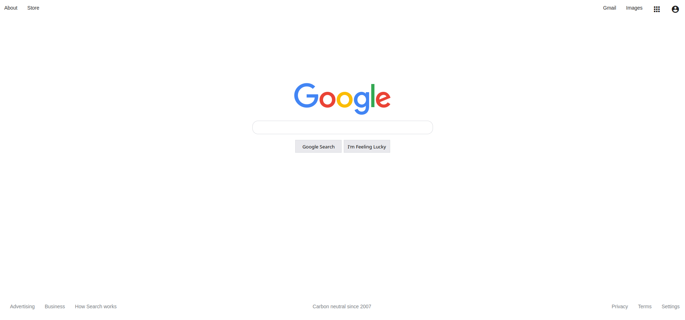
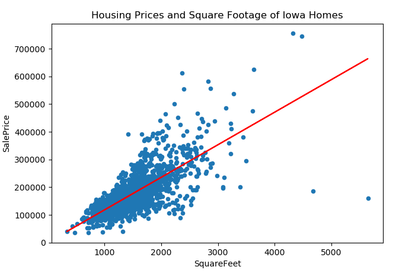

Noah Petzinger
Computer Science student at Fordham University

Hi, my name is Noah Petzinger. I am currently a Computer Science student and part-time research assistant at Fordham University in New York. My research focuses on robotics, primarily dealing with a navigation technique called visual homing: a low-cost, efficient method which does not rely on gps. Our current research project involves developing software to implement visual homing both in a simulated environment and in real life using Turtlebot T3 robots. In addition to research other areas of interest for me include data science, software development, and game design. I am currently looking for a summer internship in any computer science-related field so please feel free to reach out to me via email or social media.
This project involved essentially reverse-engineering the Google homepage to create a very simple copy of it. The purpose of this project wsa to get some experience with HTML and CSS, as well as familiarize myself with devtools.
 Project LinkThis project uses the Keras API and data on Iowa housing prices to create a linear regression model used to predict the price of future homes. This project was used to practice python and to get experience using a popular machine learning API.
 Project Link